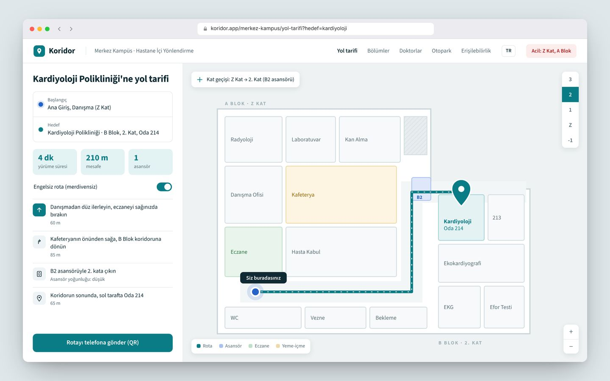

Merhaba, ben İsmail Hakkı Öngen.
Yazılım Geliştirici & Dijital İçerik Üreticisi.
Web teknolojileri, masaüstü uygulamaları, UI/UX tasarımı ve iş akışı otomasyonları üzerine çalışıyorum.
Hakkımda
Akdeniz Üniversitesi Bilgisayar Programcılığı 2. sınıf öğrencisiyim. C# ve ASP.NET Core MVC ile web mimarileri kuruyor, diğer yandan Adobe ekosistemiyle görsel tasarım, video kurgu ve animasyon projeleri üretiyorum.
Öne çıkan projeler

Kişisel Portfolyo Web Animasyonu (Grafik Animasyon Dersi)
Grafik Animasyon dersi kapsamında Adobe Animate kullanılarak hazırlanan, vektörel çizimler ve kare kare (frame-by-frame) geçişlerle zenginleştirilmiş etkileşimli tanıtım animasyonu.

PHD Teknoloji: Çok Dilli Sağlık Turizmi Platformu (İYS Dersi)
Uluslararası hastalar için Ağız ve Diş Sağlığı alanında WordPress ve Polylang altyapısıyla geliştirilen, Türkçe ve İngilizce yayın yapan kurumsal web sitesi.

Hastane İçi Yönlendirme Projesi (Sistem Mimarisi & Web)
Büyük hastanelerde ziyaretçilerin aradıkları poliklinik ve birimlere en kısa yoldan ulaşmasını sağlayan kullanıcı akış (user flow) ve sistem mimarisi tasarımı.